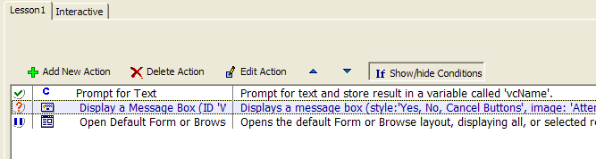
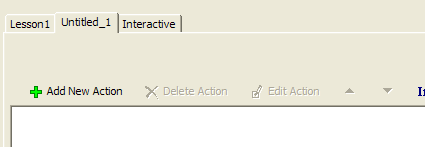
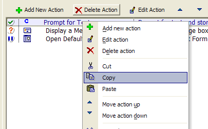
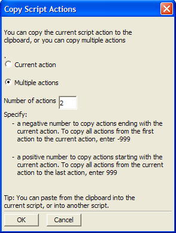
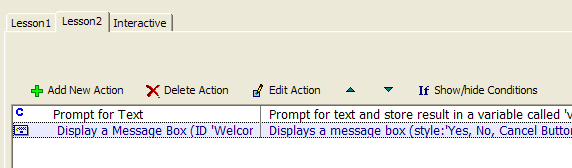

Copying an Action From One Script to Another
When you are editing an Action Script in the Code Editor, Alpha Anywhere lets you to edit multiple scripts at once, and copy Actions from one Action Script to another.
To demonstrate, edit the "Lesson1" script created in the first lesson.
Activate the Control Panel.
Click the Code tab.
Right-Click "Lesson1" and select Design. The Code Editor shows the script:

Click the New Action Script button
 on the toolbar. The
Code Editor now looks like this:
on the toolbar. The
Code Editor now looks like this:

There is a tab for the "Lesson1" script, and another tab for the new script temporarily titled "Untitled_1". Click the Lesson1 tab to return to editing this script.
Right-Click the "Prompt for Text Action" and select Copy.

In this example, you are going to copy the first two actions in the script. Select the Multiple Actions radio button.

Enter "2" for the Number of Actions.
Click OK to close the dialog box. The two actions have now been copied to the clipboard and may be pasted into any Action Script.
Click the Untitled_1 tab to switch back to the new script.
Right-click anywhere on the white space in the Action Editor and select Paste from the menu. Alpha Anywhere pastes the two Actions into the script.
Click the Save button and name it "Lesson2".
